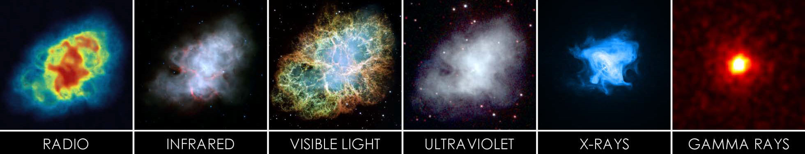
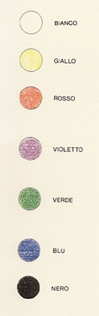
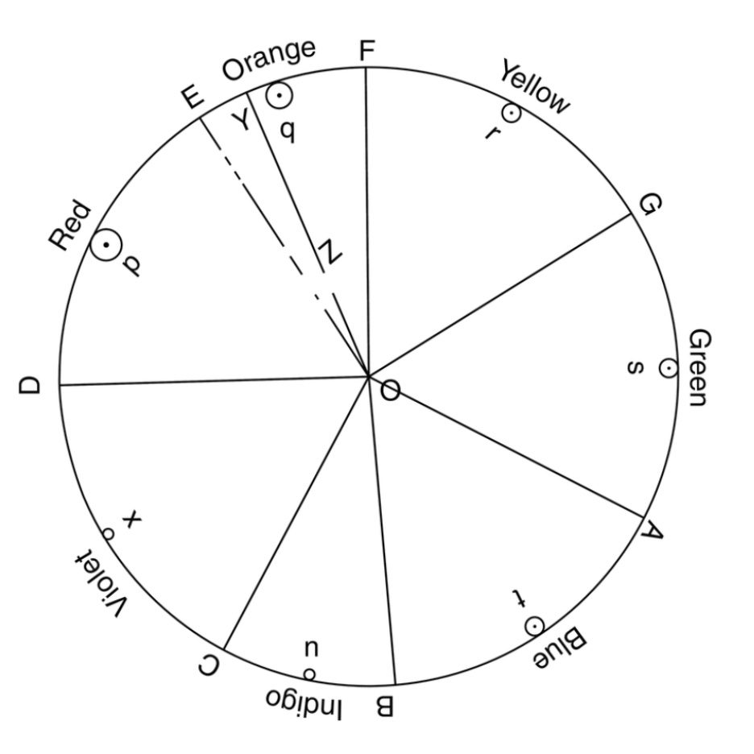
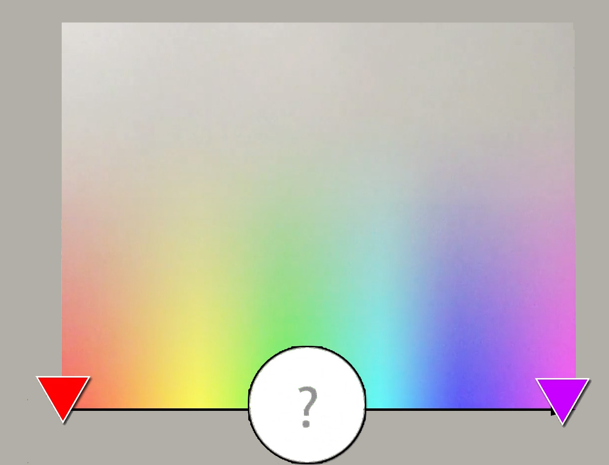
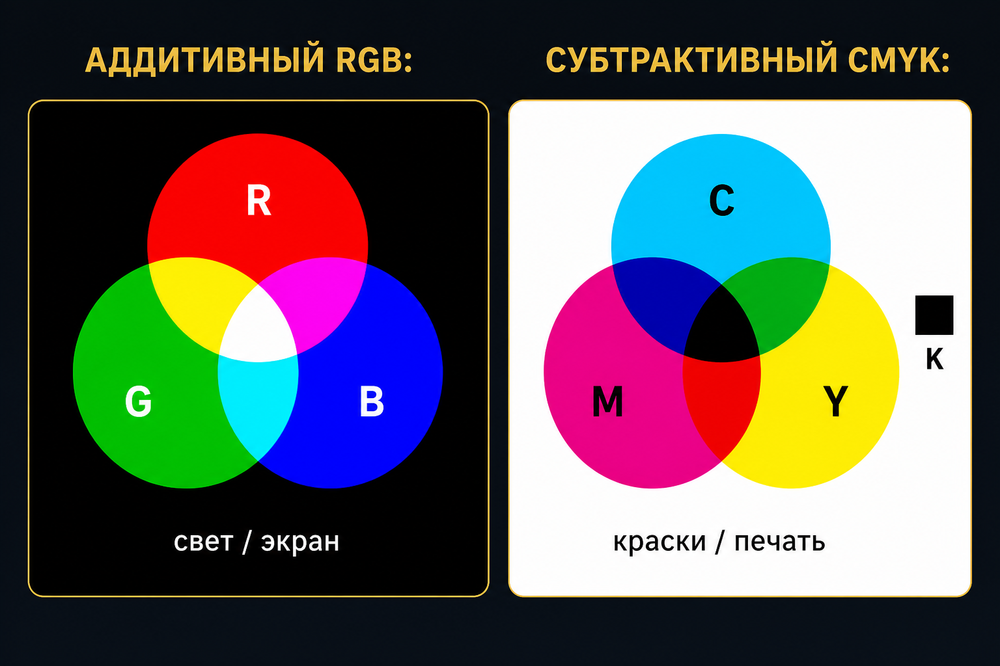
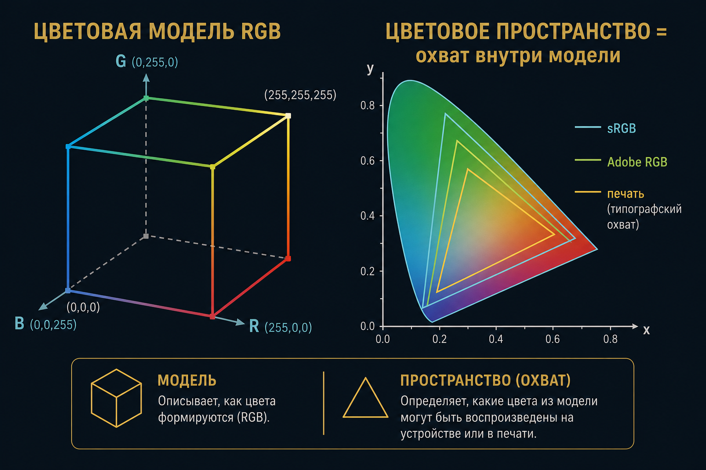
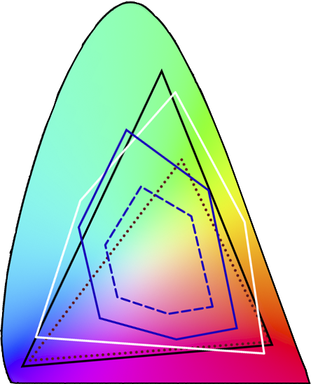
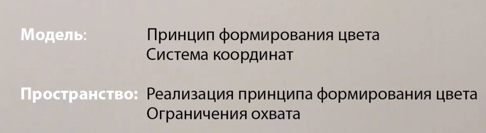

Цвет и свет
Ф06 · спектр · RGB / CMYK · ББ · модель ≠ пространство
Зачем резать на каналы
Образ последователен только после растра. Дальше — физика волны.
Свет
ЭМИ, которое видит глаз: ≈ 380–400 нм … 760–780 нм. И волна, и фотоны.
Один объект — разные диапазоны

Туманность, сад, рентген — один приём: длина волны выбирает вещество
Ньютон, 1672
Дисперсия: n зависит от частоты. Спектральный цвет — узкая полоса. Смесь двух может дать ощущение третьего.



Круг Ньютона
Оттенки есть, яркости и насыщенности — нет. Лучи и пигменты смешиваются по-разному.




Аддитивный / субтрактивный

Основные
- RGB — экран, матрица, Байер
- RYB — живопись
- CMYK — печать; K отдельно: дешевле, приводка, контраст текста
Юнг и Максвелл
Три типа рецепторов, не струна на каждую частоту. Связка с Ф01: три фильтра, Автохром, Байер.
Небо и закат
Короткие волны рассеиваются сильнее. На закате путь через атмосферу длиннее — остаётся красное. Это не хроматическая аберрация объектива.
Цветовая температура
Температура абсолютно чёрного тела с тем же цветовым тоном, что у источника. Кельвины, не «тепло/холод» художника один в один.
Баланс белого
Сдвиг каналов, чтобы белый остался белым при данном свете. Глаз делает цветопостоянство сам; AWB на закате врёт. RAW — пересчитать позже.
Колбочки
Максимумы L/M/S. Палочки — сумерки, цвета почти нет.
Как говорим о цвете
Оттенок · насыщенность · яркость — не «мало красного». Геринг: оппонентные пары (восприятие, не три колбочки).
Модель ≠ пространство

sRGB, Adobe RGB, печать


Охват устройства — какие цвета модели достижимы
HSV и YUV
HSV — крутить «теплее / бледнее». YUV — яркость отдельно, отсюда JPEG.
Вопросы
- Аддитивный vs субтрактивный?
- Зачем K в CMYK?
- Модель vs пространство — sRGB и Adobe RGB?
- Что делает ББ? Почему RAW удобнее?
- Зачем JPEG уходит в YCbCr?